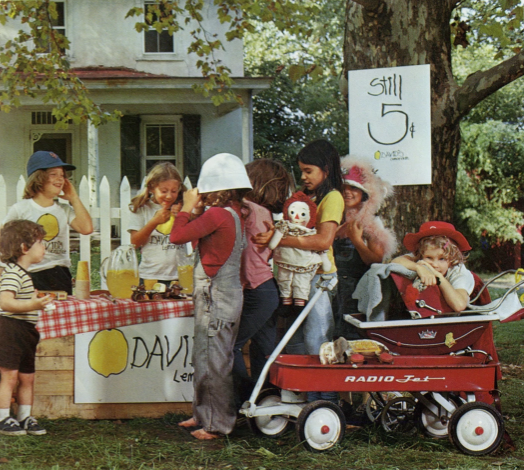

Aux États-Unis dans les années 50, de nombreux enfants s'installaient devant chez eux avec des stands en bois pour vendre des citronnades maison, afin d'obtenir un peu d'argent. L'entreprise David's Lemonade avait eu l'idée de répandre ce concept sur l'ensemble du territoire.
C'est donc pourquoi notre assocation qui regroupe actuellement de nombreux producteurs d'agrumes en France cherche à retrouver cette ambiance en organisant des dégustations à travers toute la France en trasmettant le vrai goût des agrumes de production bio et locale.
Nos dégustations se tiendrons donc à de multiples endroits en France
Si vous souhaitez participer à l'une de nos dégustations inscrivez-vous en remplissant le rapide formulaire ce-dessous :